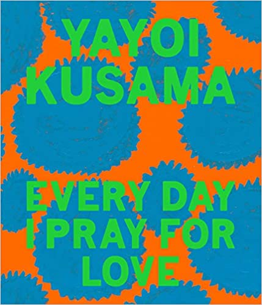
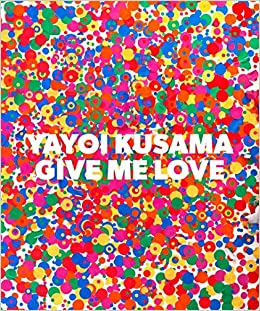
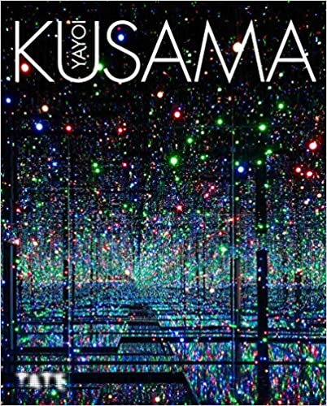
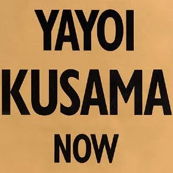
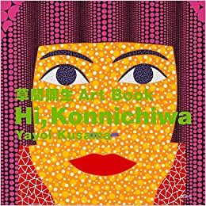
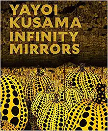
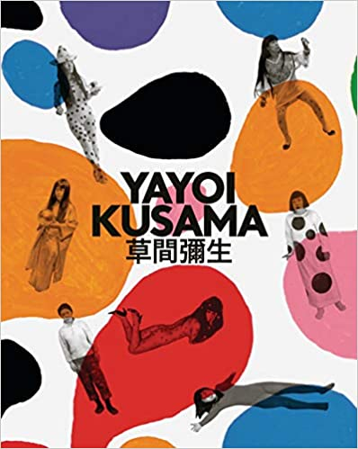
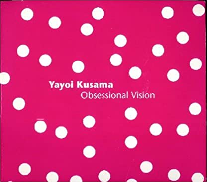
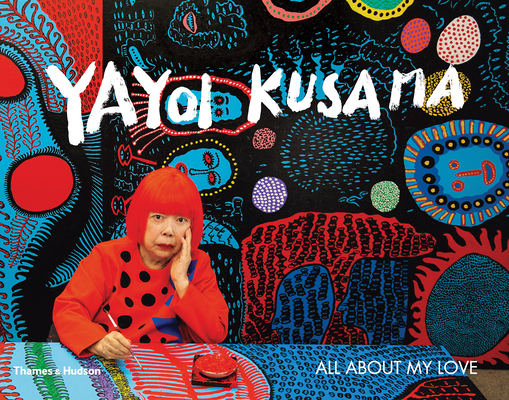

Except for visual arts, Kusama also wrote many books. In 1977, Kusama published a book of poems and paintings entitled 7. One year later, her first novel Manhattan Suicide Addict appeared. Between 1983 and 1990, she finished the novels The Hustler's Grotto of Christopher Street (1983), The Burning of St Mark's Church (1985), Between Heaven and Earth (1988), Woodstock Phallus Cutter (1988), Aching Chandelier (1989), Double Suicide at Sakuragazuka (1989), and Angels in Cape Cod (1990), alongside several issues of the magazine S&M Sniper in collaboration with photographer Nobuyoshi Araki.
Her most recent writing endeavor includes her autobiography Infinity Net published in 2003 that depicts her life from growing up in Japan, her departure to the United States, and her return to her home country, where she now resides. Infinity Net also includes some of the artist's poetry and photos of her exhibitions.
        